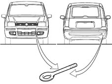

Applies to: all engines; all production periods
The vehicle is equipped with two threaded seats, one at the front and one at the back for fitting the two hook which is in the tool kit beneath the mat in the luggage compartment.

General warnings
When towing the vehicle, it is compulsory to resepct specific highway code regulations relating to the tow hook and procedures for towing on the road.Before towing, make sure that the tow hook is fully tightened. Clean the threaded seat carefully before tightening the hook.Turn the ignition key to the ON position and then OFF and DO NOT EXTRACT IT ! If the key is extracted the steering lock will come on automatically and it will be impossible to steer the wheels.When towing, exercise greater force on the brake pedal because the brake servo is not operational.The towing vehicle should be driven at as even a pace as possible to prevent counter-shocks.Do not use flexible cables when towing and avoid jerky movements.During towing operations, be careful that the fastening joining the joint to the vehicle does not damage adjacent components.Do not start the engine of the towed vehicle whilst the vehicle is being towed.
For 4x4 versions, note that the vehicle may be towed in one of the following ways:- with the front wheels raised and the rear wheels standing on a trolley;- with the rear wheels raised and the front wheels standing on a trolley;- loaded on the bed of the rescue vehicle with all four wheels on the floor.
For versions with robotised gearbox, the gearlever must be positioned on N (check the vehicle can be pushed) and proceed as when towing a normal vehicle with mechanical gearbox.